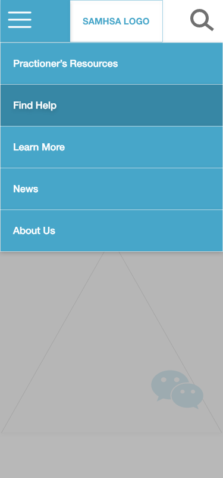

People often do not know where to turn during a mental health or substance abuse crisis. The U.S. government has many free or low-cost services to offer but the majority of the public are not aware of the help that is available or where to find it.
Project Overview
Design Challange
Even with the growing awareness about substance abuse and mental health disorders in our society, most individuals turn to technology for discrete answers on these highly stigmatized topics. More government funding has been put into mental health related programs as of late but the majority of the public are not aware of the help that is available or where to find it online or in their communities.
My Role
I was part of a UX/UI team working with fellow designer Jessica Fonseca to complete research, conduct user testing, analysis and redesign the SAMHSA website for desktop and ios within a 3 week period, pro-bono.
Tools
Adobe XD
Photoshop
InVision
Miro
Research
Competitive Analysis
An assessment of existing mental health and substance use disorder apps and platforms.
National Alliance on Mental Health: a grass-roots non-profit focused on community engagement for mental health.
Psychology Today: a mental health services search engine of sorts.
Verywellmind: a mental health and self-care app.
Existing mental health sites use varying styles of UI creating atmospheres that range from blog-like to clinical. While these apps offer some clear calls to action they lack one-stop-shop offerings and carry disclaimers regarding relability.
User Interview Key Findings
Using the feedback gathered from Guerilla testing we were able to identify more specific UX and UI issues to resolve:
Why refocus?
Studies show that nearly half of the adult population in the United States will experience a mental illness during their lifetime. But only 41 percent of those individuals who had a mental disorder in the past year received professional health care or other services. (-Mental Health First Aid, USA)
Clarity
Users struggled to navigate to resources for family members and individuals in need of resources for starting a conversation.
Redundant links
Uninviting "clinical" feel
Heavy on text walls
Hard to find specific information
Miscommunication
The site mixes content for clinicians with content for new users seeking personal resources. Clinical jargon is overwhelming to new users on the topic of mental health. Text walls meant for families and individuals are lenghty paired with long videos that many will not be willing to watch in an emergency. There is a definite need for better accessabity to practical help and information.
Proto & User Personas
Solution
To make information on Substance Use Disorders and other Mental Illness more accessible to the community by restructuring the flow and focus of the website for the US National Substance Abuse & Mental Health Services Administration SAMHSA.
Solution 1
Originally the site had 9 categories in the Navigation Bar. When reorganizing the site map we reduced this to 6 categories. Through the process of card sorting we were able to edit out redundancies on the site.
Solution 2
We decided to alter our seperation of information based on calls to actions for our primary users: Individuals with behavioral Health Issues, their Families/loved ones. Information that is specific to Practitioners has been sectioned off to it’s own page.
Solution 3
We reorganised our cards and renamed many of the primary site pages.Wording has been changed to layman's terms for better accessibility for newcomers to the site.
User Flows
In out testing there was no target user. Due to the prevalence of Substance Use Disorders and Mental Health Disorders; most people know someone who has been affected. We want to support any person seeking assistance on how to deal with a loved one who has a substance abuse or mental health problem. Our three main user objectives when utilizing the app:
Find treatment services or locations.
Look for articles or media on how to support a loved one.
Call for immediate support.
Wireframes & Iterations
Wireframes
In planning and designing our wireframes, the order of hierarchy is based on information that is most pertinent to the user (family, individual and practitioner). Categories are based on most frequently occuring topics, consolidated according to specific user (out of the 3 aforementioned).

Iterations
In response to user testing feedback we made the following changes:
When clicked, the Hamburger menu takes over the page and provides a drop down of main categories of the site.
Languages provide drop down of selections.
When pressed, buttons become a darker hue and text gets a drop shadow or changes from regular to medium.
Deliverables
Custom Design System
The existing site’s pallet consists of dark navy blues, greys and bright reds resulting in an generic, clinical feel. We switched to a more soothing tones; freshwater blue/greens and lemon yellows. The result is a more welcoming atmosphere with yellows as highlights of cleanliness and positivity, combined with a touch of seafoam green and deep sea blue for calming stability.